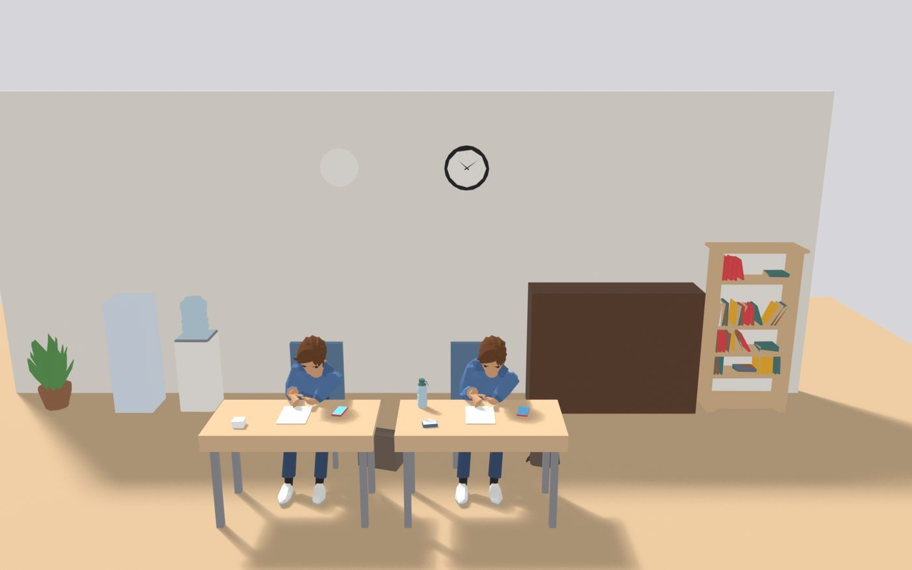
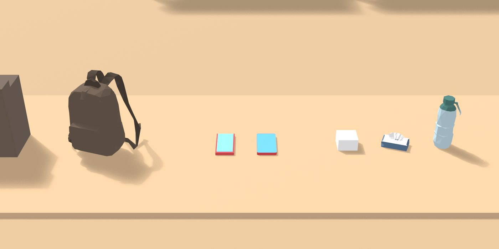
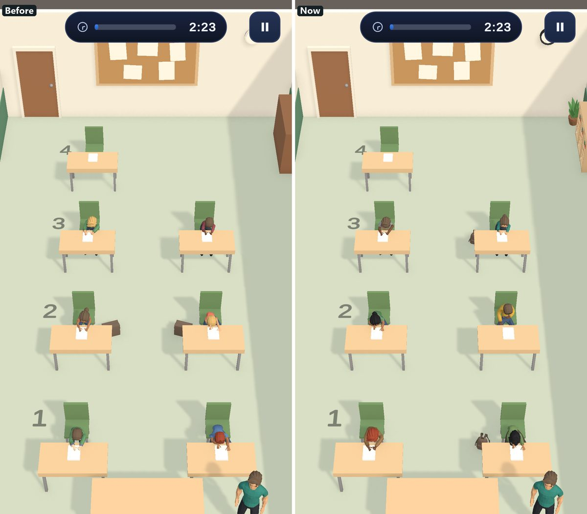
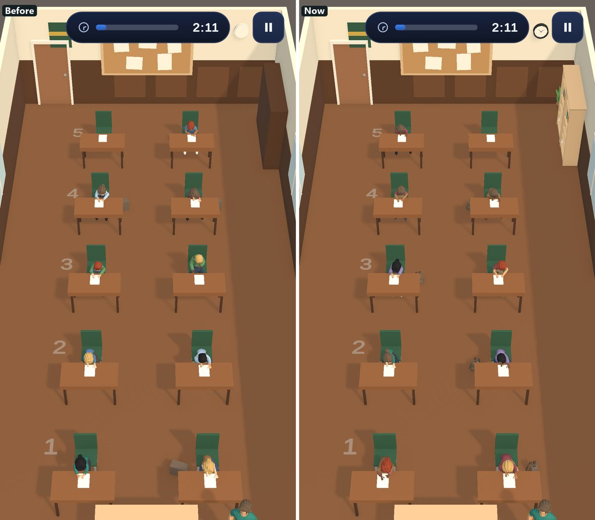
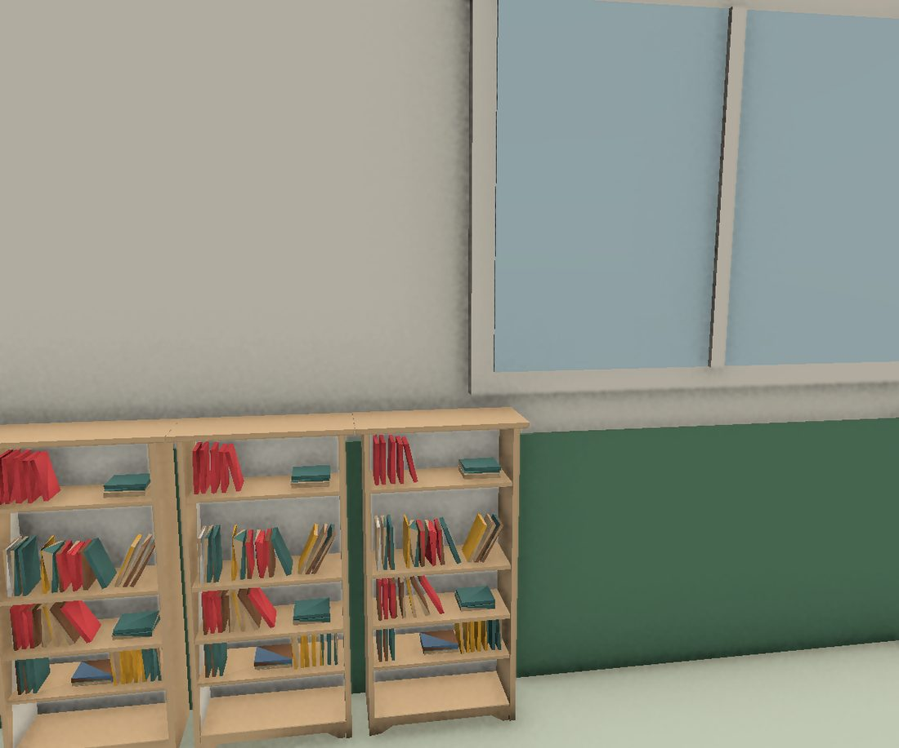
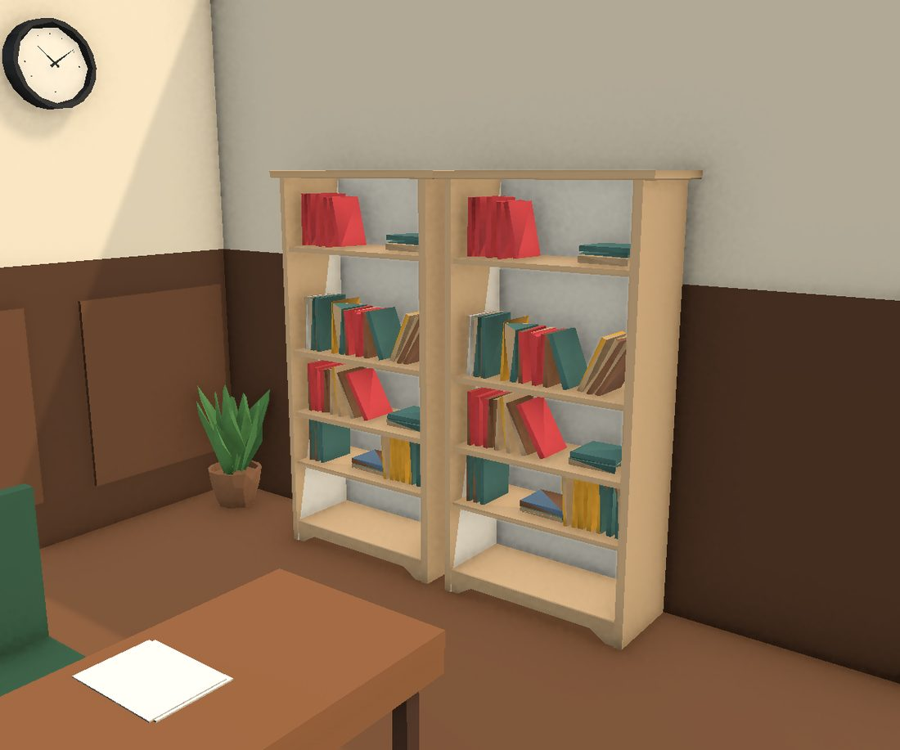
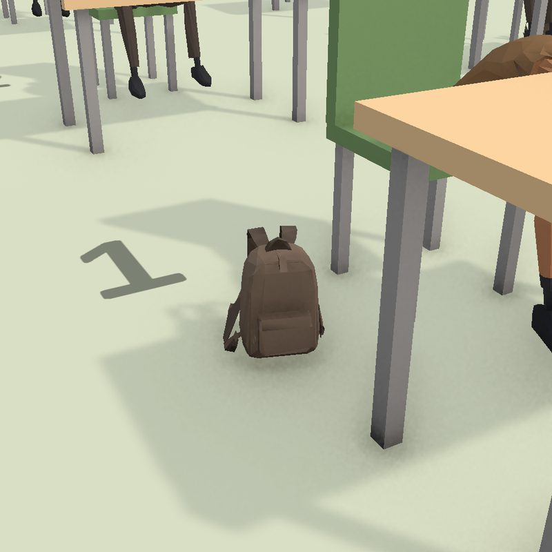
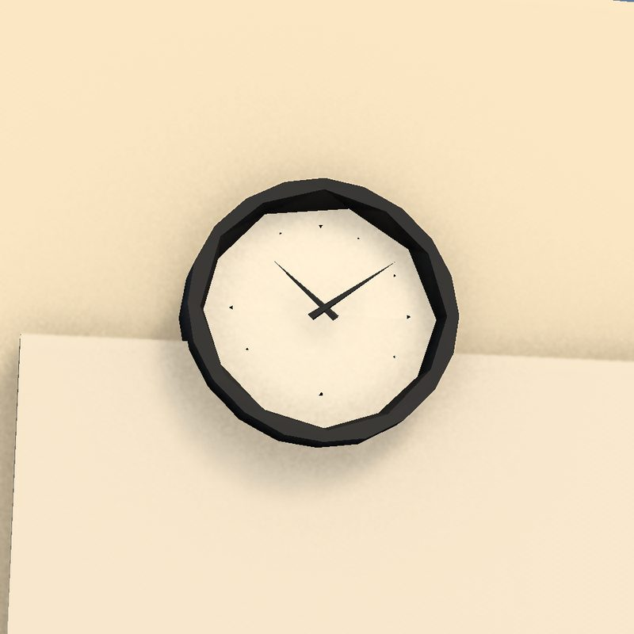
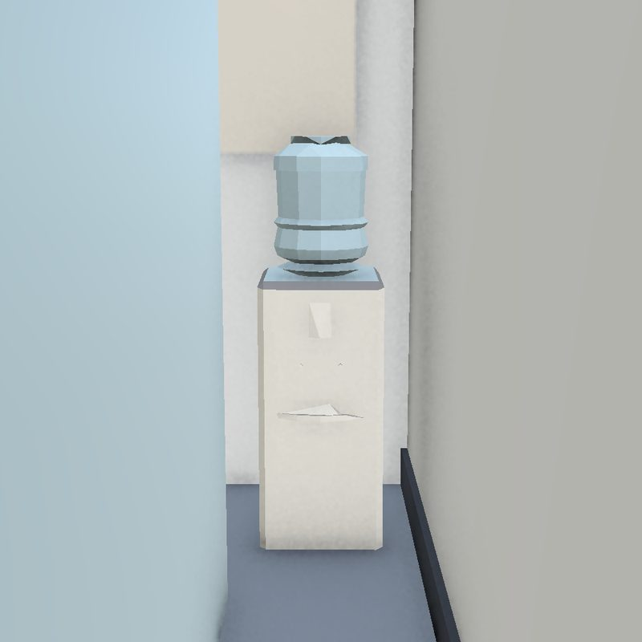
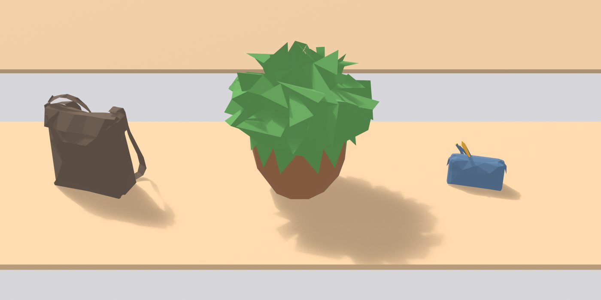

Five low-poly props replace primitive placeholders in the exam rooms: a wall clock, a backpack, bookcases, a water cooler and a snake plant. Each was made with Meshy text-to-3D, then cleaned up and recoloured in Blender to the game's palette. Six more were made and not used. The captures are from Play mode on the branch, at the phone size (1080 × 2340), and from the prop pipeline's own renders.
A dark rim, a white face and hands. It replaces the cream disc, which was hard to see from the game camera. It hangs where the old clock did.
Replaces the two-cube bag beside the desk. It is 0.32 m tall, so the baked ReachBag hand still closes on its top loop.
Replace the brown bookshelf boxes. Three 1.0 m bookcases stand side by side in the Middle classroom, below its side windows; two 1.9 m ones stand in the Panelled classroom. Each pair or row touches, with no gap.
Replaces the box in the Office.
New dressing in the free back-right corner of the Middle and Panelled classrooms, past the bookcases. It has its own footprint, so students' walks keep clear of it.


Each pair is the same room at the same exam time before the props (left) and now (right), at the game camera on a phone; the students differ between the two runs. The props are small from here; the close-ups below show them in the game.








A script scales and centres each model, decimates it, recolours every face to a cell of the shared palette, exports it and copies the game's props into the project. Holes are closed and back faces culled.
An editor builder makes the prefabs on the one palette material. Running it again changes nothing. The clock and bag prefabs keep their old GUIDs, so scenes and the catalog still point at them. If the new bookcase or cooler prefab is missing, the room falls back to the old box.
A new test builds every room shape at phone and tablet size and fails if a bookcase, bookshelf, cooler or plant meets a window. It caught the first Middle classroom bookcases (a 1.5 m pair) reaching into a window in the phone room.